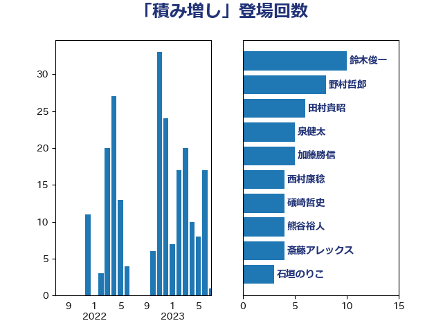

単語「積み増し」

| 鈴木俊一 | 自由民主党 | 10 回 |
| 野村哲郎 | 自由民主党 | 8 回 |
| 田村貴昭 | 日本共産党 | 6 回 |
| 泉健太 | 立憲民主党 | 5 回 |
| 加藤勝信 | 自由民主党 | 5 回 |
| 西村康稔 | 自由民主党 | 4 回 |
| 礒崎哲史 | 国民民主党 | 4 回 |
| 熊谷裕人 | 立憲民主党 | 4 回 |
| 斎藤アレックス | 国民民主党 | 4 回 |
| 石垣のりこ | 立憲民主党 | 3 回 |
| 武部新 | 自由民主党 | 3 回 |
| 森本真治 | 立憲民主党 | 3 回 |
| 本庄知史 | 立憲民主党 | 3 回 |
| 岸田文雄 | 自由民主党 | 3 回 |
| 小沢雅仁 | 立憲民主党 | 3 回 |
| 宮本徹 | 日本共産党 | 3 回 |
| 青柳陽一郎 | 立憲民主党 | 2 回 |
| 青柳仁士 | 日本維新の会 | 2 回 |
| 金子恵美 | 立憲民主党 | 2 回 |
| 西岡秀子 | 国民民主党 | 2 回 |
| 船橋利実 | 自由民主党 | 2 回 |
| 石川博崇 | 公明党 | 2 回 |
| 江藤拓 | 自由民主党 | 2 回 |
| 櫻井周 | 立憲民主党 | 2 回 |
| 柚木道義 | 立憲民主党 | 2 回 |
| 杉尾秀哉 | 立憲民主党 | 2 回 |
| 星北斗 | 自由民主党 | 2 回 |
| 庄子賢一 | 公明党 | 2 回 |
| 山添拓 | 日本共産党 | 2 回 |
| 小沼巧 | 立憲民主党 | 2 回 |
| 小林鷹之 | 自由民主党 | 2 回 |
| 大塚耕平 | 国民民主党 | 2 回 |
| 堀場幸子 | 日本維新の会 | 2 回 |
| 古賀千景 | 立憲民主党 | 2 回 |
| 原口一博 | 立憲民主党 | 2 回 |
| 勝部賢志 | 立憲民主党 | 2 回 |
| 中川正春 | 立憲民主党 | 2 回 |
| ながえ孝子 | 無所属 | 2 回 |
| 鰐淵洋子 | 公明党 | 1 回 |
| 高木かおり | 日本維新の会 | 1 回 |
| 馬場雄基 | 立憲民主党 | 1 回 |
| 階猛 | 立憲民主党 | 1 回 |
| 金村龍那 | 日本維新の会 | 1 回 |
| 金子道仁 | 日本維新の会 | 1 回 |
| 道下大樹 | 立憲民主党 | 1 回 |
| 藤岡隆雄 | 立憲民主党 | 1 回 |
| 蓮舫 | 立憲民主党 | 1 回 |
| 葉梨康弘 | 自由民主党 | 1 回 |
| 萩生田光一 | 自由民主党 | 1 回 |
| 若松謙維 | 公明党 | 1 回 |
| 芳賀道也 | 国民民主党 | 1 回 |
| 舩後靖彦 | れいわ新選組 | 1 回 |
| 羽田次郎 | 立憲民主党 | 1 回 |
| 緑川貴士 | 立憲民主党 | 1 回 |
| 紙智子 | 日本共産党 | 1 回 |
| 簗和生 | 自由民主党 | 1 回 |
| 稲津久 | 公明党 | 1 回 |
| 田島麻衣子 | 立憲民主党 | 1 回 |
| 玉木雄一郎 | 国民民主党 | 1 回 |
| 牧島かれん | 自由民主党 | 1 回 |
| 牧山ひろえ | 立憲民主党 | 1 回 |
| 渡辺創 | 立憲民主党 | 1 回 |
| 浜田聡 | NHK党 | 1 回 |
| 池下卓 | 日本維新の会 | 1 回 |
| 水野素子 | 立憲民主党 | 1 回 |
| 比嘉奈津美 | 自由民主党 | 1 回 |
| 櫛渕万里 | れいわ新選組 | 1 回 |
| 横山信一 | 公明党 | 1 回 |
| 梅村聡 | 日本維新の会 | 1 回 |
| 柴田巧 | 日本維新の会 | 1 回 |
| 有村治子 | 自由民主党 | 1 回 |
| 早稲田ゆき | 立憲民主党 | 1 回 |
| 新垣邦男 | 立憲民主党 | 1 回 |
| 志位和夫 | 日本共産党 | 1 回 |
| 徳永久志 | 無所属 | 1 回 |
| 後藤祐一 | 立憲民主党 | 1 回 |
| 平林晃 | 公明党 | 1 回 |
| 平木大作 | 公明党 | 1 回 |
| 川田龍平 | 立憲民主党 | 1 回 |
| 岩渕友 | 日本共産党 | 1 回 |
| 山際大志郎 | 自由民主党 | 1 回 |
| 宮本岳志 | 日本共産党 | 1 回 |
| 宮崎雅夫 | 自由民主党 | 1 回 |
| 守島正 | 日本維新の会 | 1 回 |
| 奥下剛光 | 日本維新の会 | 1 回 |
| 太田房江 | 自由民主党 | 1 回 |
| 大西健介 | 立憲民主党 | 1 回 |
| 大島敦 | 立憲民主党 | 1 回 |
| 大串博志 | 立憲民主党 | 1 回 |
| 塩田博昭 | 公明党 | 1 回 |
| 城井崇 | 立憲民主党 | 1 回 |
| 和田有一朗 | 日本維新の会 | 1 回 |
| 佐藤英道 | 公明党 | 1 回 |
| 住吉寛紀 | 日本維新の会 | 1 回 |
| 五十嵐清 | 自由民主党 | 1 回 |
| 中川郁子 | 自由民主党 | 1 回 |